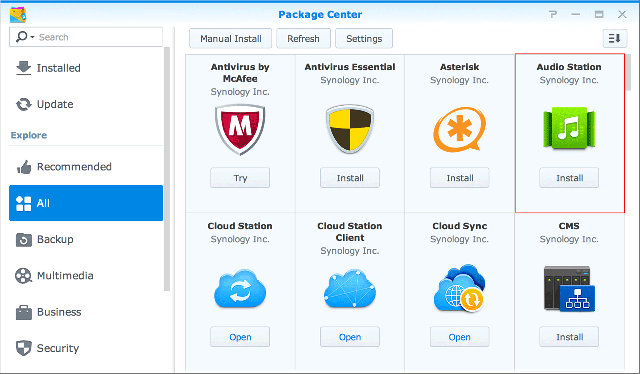
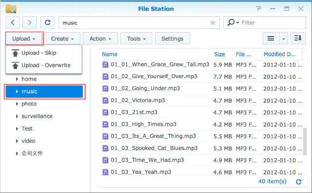
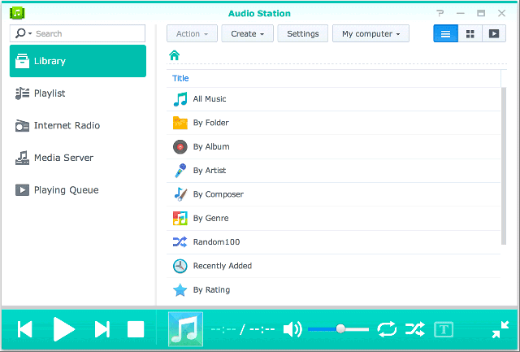
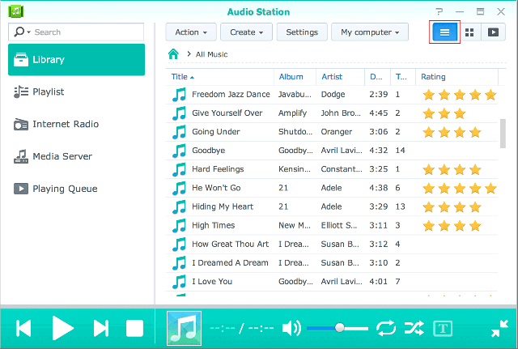
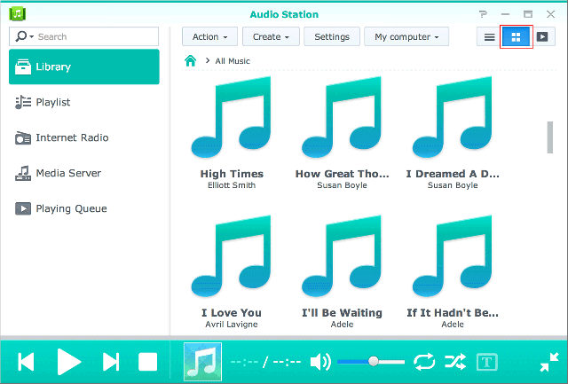
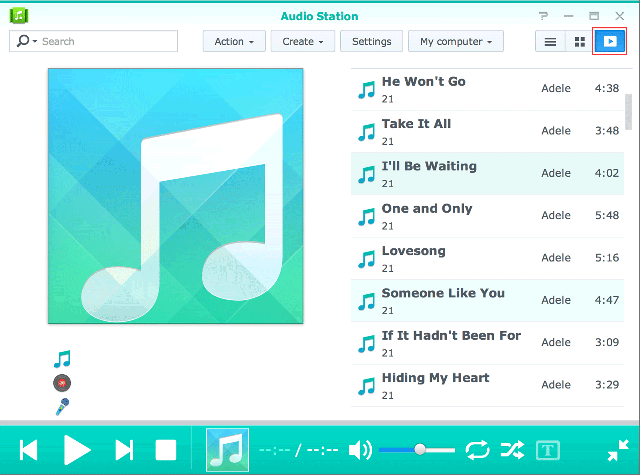
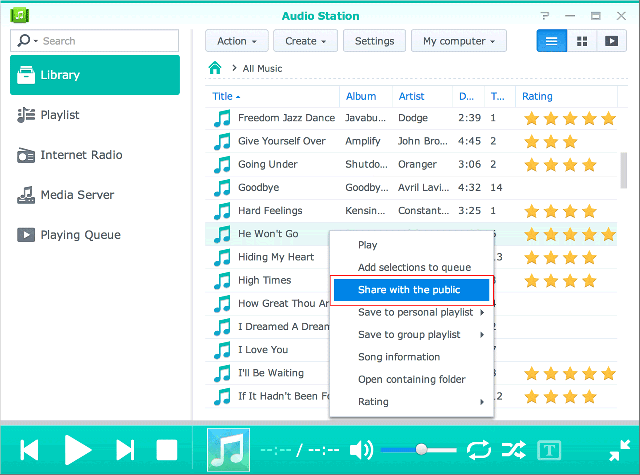
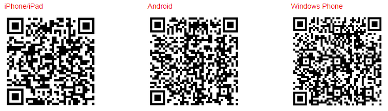

Visão Geral
Com Audio Station, pode organizar, percorrer e reproduzir música armazenada no seu eCore Server pela Internet. Audio Station suporta também uma vasta seleção de tipos de ficheiros, para que possa desfrutar da sua música em qualquer formato, da forma que quiser. Pode também transferir DS Audio, uma aplicação móvel que complemente Audio Station, permitindo-lhe aceder à música no seu eCore Server quando estiver em viagem.
1. Instalar a Audio Station
- Aceda ao Centro de Pacotes e localize Audio Station. Clique em Instalar. 
2. Armazene Ficheiros Áudio na pasta de música
- Aceda a File Station > música e clique em Carregar. 
- Selecione os ficheiros que deseja carregar para a sua pasta música a partir do seu computador local.
3. Pesquisar Música
Depois de ter carregado ficheiros de música, pode agora reproduzir e percorrer a sua música na Audio Station. Se desejar aceder e percorrer os seus ficheiros de música quando não está na sua rede local, recomendamos que ative QuickConnect em Painel de Controlo > QuickConnect. Se não tiver uma Conta Synology, pode configurar uma em poucos minutos e dar à sua DiskStation um QuickConnect ID. Com esta opção ativada, pode agora iniciar a sessão no DSM e aceder à sua música a partir de qualquer lugar. Pode também usar o seu QuickConnect ID para iniciar a sessão em DS Audio para poupar trabalho em memorizar o seu endereço IP.
3.1 Biblioteca
A biblioteca contém música na pasta partilhada música ou qualquer das outras pastas indexadas do seu eCore Server. No separador Biblioteca, a sua música é ordenada em categorias para lhe proporcionar diferentes opções para percorrer facilmente a sua música consoante as suas necessidades e preferências. Tal como isto, permite-lhe encontrar facilmente qualquer música que estiver a procurar. Pode clicar em cada categoria para realzizar a sua pesquisa ou selecionar a categoria que deseja procurar a partir do menu de contexto na barra de pesquisa.
3.2. Modos de visualização
Os ícones no canto superior direito da Audio Station permitem-lhe mudar entre diferentes modos de visualização nos quais pode percorrer a sua biblioteca de música.
- Vista de lista permite-lhe visualizar a sua música como uma lista apresentando o nome da música, intérprete, álbum, duranção de música, número de faixa e classificação. 
- Capa apresenta o nome da faixa, nome do álbum e a capa do álbum. 
- Fila de espera de reprodução apresenta a fila de espera de reprodução em ecrã completo com capas de álbuns e títulos ou letra de músicas. 
4. Partilhar em Público
A função de partilhar em público do Audio Station permite-lhe partilhar músicas com o público, ao facultar-lhe um link que pode enviar para quem está ou não na sua rede ou que não tem um eCore Server. Assim que tiverem o link, podem ouvir as músicas.
4.1. Partilhar músicas com o público
- Clique com o botão direito na(s) música(s) que pretende partilhar e selecione Partilhar com o público. 
- Há duas opções quando está a partilhar músicas com o público:
- Se selecionar uma só música a partilhar, na caixa de diálogo que surge, assinale a opção Partilhar com o público para ativar a partilha de ligação.
- Se selecionar várias músicas para partilhar, isto irá criar uma lista de reprodução. Pode dar um nome à sua lista de reprodução bem como a opção de especificar um período de validade para a ligação assinalando a opção Personalizar Período de Validade e clicar em OK.


- Copie o link e cole-o para a pessoa com quem pretende partilhar a lista de reprodução, ou clique em Ir para link para visitar o link diretamente.
5. Organizar e Reproduzir Música em Dispositivos Móveis
DS audio funciona no iPad/iPhone/iPod touch, dispositivos Android e Windows Phones. A aplicação está disponível de forma gratuita na Apple App Store, Google Play, e Windows Phone Store. Pode também digitalizar o código QR abaixo para uma transferência instantânea.
